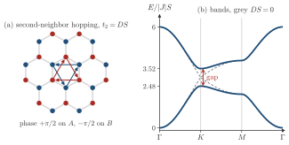
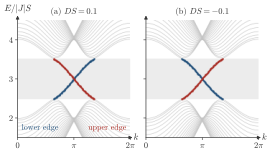

Page 10 of 11 of this session
6.16 Topological magnons
Once magnons have a real band structure, which is a dispersion \(E(\mathbf k)\) over the Brillouin zone, we can ask about magnon bands the same question that we have already asked twice about electronic bands. Can this band structure have a nontrivial topological invariant? We will now see that it can. A honeycomb ferromagnet with a Dzyaloshinskii-Moriya term is the Haldane model for magnons, with two magnon bands of Chern number \(\pm1\) and chiral magnon modes at its edges.
\[C_{\text{Dirac}} = \frac{1}{2}\,\mathrm{sgn}(m)\,\mathrm{sgn}(\lambda). \tag{3.8}\]
This is the Chern number of one gapped Dirac cone \(k_x\sigma_x+\lambda k_y\sigma_y+m\sigma_z\), from Section 3.10. The mass is \(m\), and the chirality \(\lambda=\pm1\) has opposite signs at the two Dirac points \(K\) and \(K'\) of the honeycomb lattice. A mass that also changes sign between \(K\) and \(K'\), as a term that is odd under time reversal does, makes the two halves add up to \(C=\pm1\).
To see this, we use again the Chern number (3.4) of Session 3 and Session 4, where the Berry curvature \(\Omega(\mathbf k)\) of a Bloch band is integrated over the Brillouin zone and gives an integer. This is the third time that we apply it, now to the bosonic tight-binding Hamiltonian of the magnons of Section 6.14 instead of an electronic one.
The Chern number of a magnon band is
\[C = \frac{1}{2\pi}\int_\text{BZ} \Omega(\mathbf k)\, d^2k, \tag{6.10}\]
with the Berry curvature \(\Omega(\mathbf k)\) of its Bloch states. We take a honeycomb ferromagnet with the exchange \(J<0\), a Dzyaloshinskii-Moriya coupling \(D\) between second neighbors, and the moments along \(+z\), normal to the plane. Its magnon bands are the Haldane model with \(t=|J|S\) and \(t_2=DS\), plus the constant \(3|J|S\). The gap at \(K\) is \(6\sqrt3\,|D|S\), and the two bands have \(C=\pm1\), with signs that change with the sign of \(D\) and with the direction of the moments.
We add to the plain Heisenberg exchange a spin-orbit coupling of the Dzyaloshinskii-Moriya type of Section 6.12. This term plays the same role as the complex second-neighbor hopping of the Haldane model for electrons in Section 3.10b. It introduces complex phases in the magnon hopping amplitudes. These phases can open a gap in the magnon band structure at finite energy, and give the bands on both sides of this gap a nonzero Chern number (6.10).
When we put such a topological magnon Hamiltonian on a ribbon, the bulk-boundary correspondence of Section 3.7 guarantees chiral magnon edge modes inside the gap. These modes propagate in only one direction along each edge, and they are the magnon analogue of the chiral electronic edge states of a Chern insulator. They carry spin and energy and not charge, but they are topologically protected in the same sense as their electronic counterparts. It is the same tool that we used for electrons in Session 3 and Session 4, now applied to magnon bands.
Schematic 6.12 shows this on a honeycomb ferromagnet, with \(J<0\). The magnon hops between first neighbors with \(t=|J|S\), and the Dzyaloshinskii-Moriya term gives a second-neighbor hopping with phase \(\pm\pi/2\), with opposite signs on the two sublattices. This is the Haldane model of Section 3.10b, up to the constant onsite energy \(3|J|S\), with \(t_2=DS\), so the gap at \(K\) is \(6\sqrt3\,t_2\).
The steps From the Dzyaloshinskii-Moriya term to a complex hopping
We take the simplest case, one pair of second neighbors \(i\) and \(j\). We write the term as \(D\,\nu_{ij}\,\hat z\cdot(\mathbf S_i\times\mathbf S_j)\), with \(\nu_{ij}=+1\) when the path from \(i\) to \(j\) through their common neighbor turns left, and \(\nu_{ij}=-1\) when it turns right. Each pair enters the sum once. With \(S^\pm=S^x\pm iS^y\) the cross product is
\[\hat z\cdot(\mathbf S_i\times\mathbf S_j) = S_i^xS_j^y-S_i^yS_j^x = \frac i2\big(S_i^+S_j^- - S_i^-S_j^+\big).\]
Near saturation (6.7) gives \(S_i^+S_j^-\approx 2S\,a_j^\dagger a_i\) and \(S_i^-S_j^+\approx 2S\,a_i^\dagger a_j\), since two bosons on different sites commute. The term becomes
\[D\,\nu_{ij}\,\hat z\cdot(\mathbf S_i\times\mathbf S_j) \approx i\nu_{ij}DS\,a_j^\dagger a_i - i\nu_{ij}DS\,a_i^\dagger a_j,\]
meaning that the magnon hops between \(i\) and \(j\) with the amplitude \(\pm iDS=DS\,e^{\pm i\pi/2}\). The first term moves the magnon from \(i\) to \(j\). When this path turns left, \(\nu_{ij}=+1\) and the amplitude is \(+iDS\). So for \(D>0\) a magnon that hops counterclockwise around a hexagon gets the phase \(+\pi/2\), and one that hops clockwise gets \(-\pi/2\). The arrows of panel (a) of Schematic 6.12 go counterclockwise on \(A\) and clockwise on \(B\), which is why they carry \(+\pi/2\) on \(A\) and \(-\pi/2\) on \(B\). This holds for the moments along \(+z\) of (6.7). With the moments along \(-z\) the operators \(S^+\) and \(S^-\) exchange their roles, and every second-neighbor amplitude changes sign.
The Heisenberg part gives the hopping \(-|J|S\) between first neighbors and the onsite energy \(z|J|S\), as in Section 6.14, with \(z=3\) on the honeycomb lattice. Together this is the Haldane model with \(t=|J|S\), \(t_2=DS\) and the phase \(\pi/2\), plus \(3|J|S\) on every site.

g5_magnon_honeycomb.py
h.add_haldane(-0.1155), with the onsite energy \(3|J|S\). The energy is in units of \(|J|S\). The lower band starts at zero at \(\Gamma\). This is the Goldstone mode of the Heisenberg part, and the Dzyaloshinskii-Moriya term does not move it. The gap at \(K\) goes from \(2.48\) to \(3.52\), so it is \(1.04\). The grey dashed bands are the case \(DS=0\), where the bands touch at \(K\). The two bands have opposite Chern numbers, \(\pm1\).
The magnon bands of a magnet are measured with inelastic neutron scattering. In the insulating honeycomb ferromagnet CrI\(_3\), with \(T_C=61\) K, this finds two bands of spin waves separated by a gap of about \(4\) meV at the Dirac points. The article accounts for them with a Heisenberg Hamiltonian with the Dzyaloshinskii-Moriya interaction. The measurement is in this article, which is also the one given in the notebook session6.ipynb. If we read this gap with the model of this page, \(6\sqrt3\,DS=4\) meV gives \(DS\approx0.4\) meV. The abstract of the article reports the gap, and not a measured edge mode or a Chern number.
A magnon band gap has bands with Chern numbers \(\pm1\). What do we find on the edges of a ribbon?
Show the answers
- A. ✗ False
This is false. The bulk-boundary correspondence counts Chern numbers and does not use charge. In the Haldane model with \(C=\pm1\) the same counting gives one chiral branch, and for magnons it carries spin and heat.
- B. ✓ True
This is true. The chiral edge branches carry spin and energy, one per unit of Chern number. On the two edges of a ribbon they run in opposite directions.
- C. ✗ False
This is false. Two branches of opposite direction on one edge give a net chirality of zero. They could backscatter into each other and gap out, so they cannot be required by \(C=\pm1\).
We reverse the sign of the Dzyaloshinskii-Moriya vector. What happens to the topological magnon bands?
Show the answers
- A. ✗ False
This is false. Reversing the vector is a mirror operation, so the spectrum is the same. In the Haldane model the phases \(+\pi/2\) and \(-\pi/2\) give identical gaps, and only \(C\) changes sign.
- B. ✓ True
This is true. This term plays the role of the complex hopping of the Haldane model, and reversing its sign reverses the phases. The Berry curvature changes sign, so the Chern numbers change sign too.

Download the pyqula scriptg5_magnon_ribbon.pyThe edge states of a magnon ribbon with zigzag edges and \(48\) sites across, for \(|J|S=1\) and \(DS=\pm0.1\), computed with pyqula. The energy is in units of \(|J|S\), the momentum \(k\) along the ribbon is in units of the inverse period, and the grey strip is the gap of the bulk. Blue states sit at the lower edge and red states at the upper edge. The branch of the lower edge rises for one sign and falls for the other, and the upper edge does the opposite. Every site has the onsite energy \(3|J|S\) of the bulk, while a spin at the edge has two neighbors. With \(2|J|S\) on these sites one branch of each edge still crosses the gap, in the same direction. - C. ✗ False
This is false. In the Haldane model the phases \(\varphi=+\pi/2\) and \(\varphi=-\pi/2\) give opposite Chern numbers. The direction of the edge branch follows this sign, so it does change.
Each picture shows the magnon bands of a ribbon with zigzag edges. The grey strip is the gap of the bulk. In this strip and on its borders, blue marks the states of the lower edge. Red marks those of the upper edge. Which ribbon has bulk bands with \(C=\pm1\)?
Show the answers
- A. ✓ True
This is true. One branch of each edge crosses the gap, and the two run in opposite directions, which is the count of a gap with \(|C|=1\). This ribbon has the Dzyaloshinskii-Moriya term \(DS=0.1\), with the gap \(1.04\) in units of \(|J|S\).
- B. ✗ False
This is false. The gap has the same size, \(1.04\), but no branch crosses it, so \(C=0\). The flat branches of the edges stay at its two borders. This ribbon has no Dzyaloshinskii-Moriya term, and its onsite energy is larger by \(1.04\) on one sublattice.
- C. ✗ False
This is false. The lower and the upper bands meet, so there is no gap, and the lower band has no Chern number of its own. This ribbon has no Dzyaloshinskii-Moriya term.
The magnon Bloch Hamiltonian of the honeycomb ferromagnet is the Haldane model with \(t=|J|S\), \(t_2=DS\) and the phase \(\pi/2\), plus the onsite energy \(3|J|S\). Show that the gap at \(K\) is \(6\sqrt3\,DS\), and compute it for \(DS=0.1\,|J|S\). Find also the two magnon energies at \(\Gamma\).
Solution
On the two sublattices \(A\) and \(B\) the Bloch Hamiltonian is
\[H(\mathbf k) = 3|J|S + \begin{pmatrix} m(\mathbf k) & -|J|S\,f^*(\mathbf k)\\ -|J|S\,f(\mathbf k) & -m(\mathbf k)\end{pmatrix}, \qquad f(\mathbf k)=\sum_{\boldsymbol\delta}e^{i\mathbf k\cdot\boldsymbol\delta},\]
where \(\boldsymbol\delta\) are the three vectors from a site of \(A\) to its first neighbors. As in Section 3.10b, a hop along a vector \(\mathbf d\) gives the phase \(e^{i\mathbf k\cdot\mathbf d}\), so the hop from \(B\) to \(A\), along \(-\boldsymbol\delta\), gives \(f^*\). The six second neighbors of a site of \(A\) are at \(\pm\mathbf b_1\), \(\pm\mathbf b_2\) and \(\pm\mathbf b_3\), three vectors of length \(\sqrt3\) at \(120^\circ\) from each other. We choose them so that a hop of a site of \(A\) along each of them turns left. A hop along \(+\mathbf b_n\) has the amplitude \(iDS\) and a hop along \(-\mathbf b_n\) the amplitude \(-iDS\), so
\[m(\mathbf k) = iDS\sum_{n}\big(e^{i\mathbf k\cdot\mathbf b_n}-e^{-i\mathbf k\cdot\mathbf b_n}\big) = -2DS\sum_n\sin(\mathbf k\cdot\mathbf b_n),\]
and on \(B\) the phases are reversed, which gives \(-m(\mathbf k)\). At \(K\) the three phases \(\mathbf K\cdot\boldsymbol\delta\) are \(0\) and \(\pm2\pi/3\), so \(f(\mathbf K)=1+e^{2\pi i/3}+e^{-2\pi i/3}=0\) and the first-neighbor term vanishes. The three products \(\mathbf K\cdot\mathbf b_n\) are all \(2\pi/3\) modulo \(2\pi\), so \(\sum_n\sin(\mathbf K\cdot\mathbf b_n)=3\sqrt3/2\) and \(m(\mathbf K)=-3\sqrt3\,DS\). The two energies are \(3|J|S\mp3\sqrt3\,DS\), and the gap at \(K\) is \(6\sqrt3\,DS\), which is \(1.04\,|J|S\) for \(DS=0.1\,|J|S\).
At \(\Gamma\) all the sines vanish and \(f=3\), so the two energies are \(3|J|S\pm3|J|S\), which are \(0\) and \(6|J|S\). The zero is the Goldstone mode of Section 6.15 for the Heisenberg part alone. The Dzyaloshinskii-Moriya term keeps only the rotations about \(z\), and the ferromagnet along \(z\) does not break them, so here the zero is not protected by a broken symmetry. It survives because each site has as many left turns as right turns to its second neighbors. So at \(\Gamma\) the Dzyaloshinskii-Moriya hops into a site add up to zero, and a uniform tilt of all the spins costs no energy.
The gap at \(K\) is linear in \(D\), so a measured gap at the Dirac points gives \(DS\) directly, as in the box on CrI\(_3\) above. For \(DS<0.19\,|J|S\) it is also the smallest gap between the two bands. Between \(0.19\,|J|S\) and \(0.58\,|J|S\) the smallest gap is \(2|J|S\), at \(M\). Above \(0.58\,|J|S\) the lower band goes below zero at \(K\), and the ferromagnet is no longer stable.
Notebook check-in: session6.ipynb, “(Exercise) Topological magnons in 2D magnets”
Construct a magnon Hamiltonian with a spin-orbit term of Dzyaloshinskii-Moriya type on top of the Heisenberg exchange, compute its Chern number with (6.10), and look for chiral magnon edge modes on a ribbon. This reproduces directly, for magnons, the argument of the bulk-boundary correspondence above.
Try it. In the cell, h.add_haldane(0.1) sets the complex hopping that plays the role of the Dzyaloshinskii-Moriya term. Change it to -0.1 and run the cell again. In the ribbon the branch of each edge that crosses the gap now runs the other way, which is the change of sign of the Chern numbers. The cell does not compute the Chern number. A call of h.get_chern() after the line with h.set_filling(0.0) and h.add_onsite(0.5) gives 0.0 for both signs, since zero energy is then below both bands.
The companion notebook goes further than these notes in two places, with exercises on electronic and magnetic symmetry breaking in graphene multilayers and on many-body spin response functions. We do not derive them here, so they are independent work with the notebook, and the spin response functions come back in Session 9.
- In Section 9.8 a vacancy in a Chern insulator hosts a mode inside the gap, which is the bulk-boundary correspondence at a boundary of zero size.
- In Section 10.6 the Chern number is one of the topological invariants that are set against local order parameters, such as the magnetization of this session.
- In Session 7 we leave mean field and single-particle bands, and we treat strongly correlated spin chains with tensor networks.